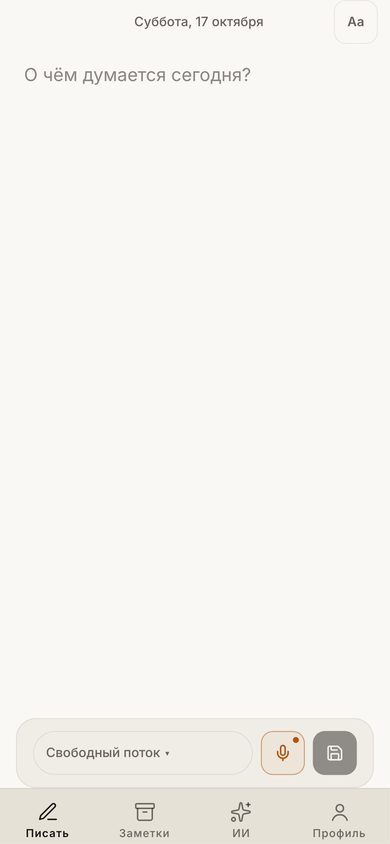
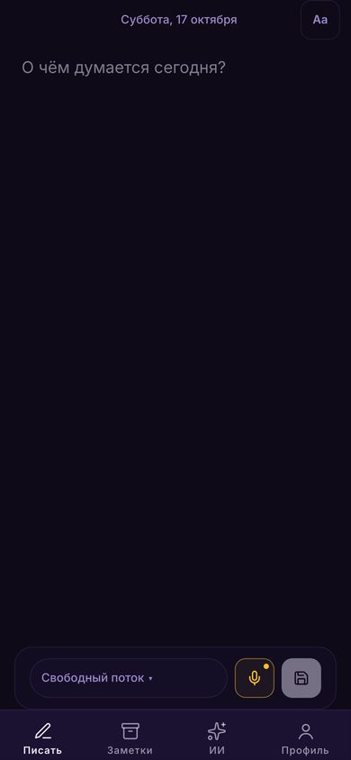
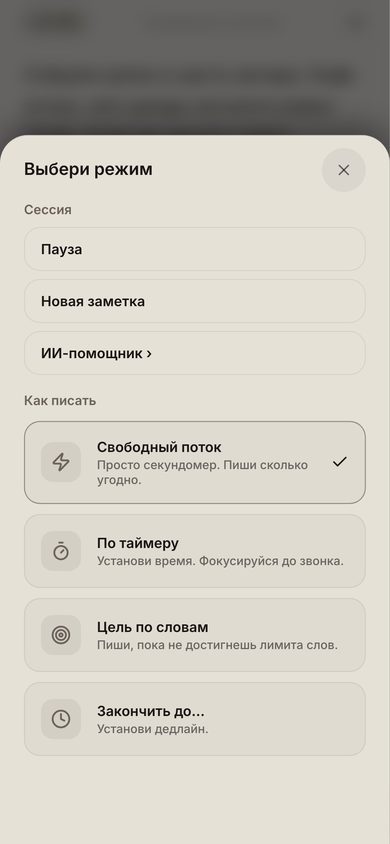
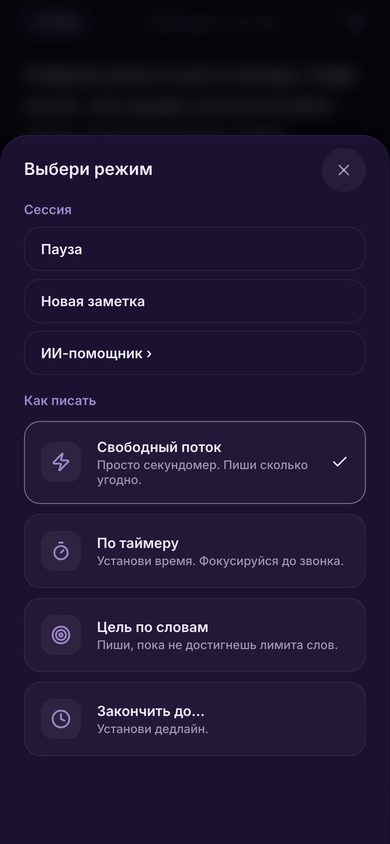
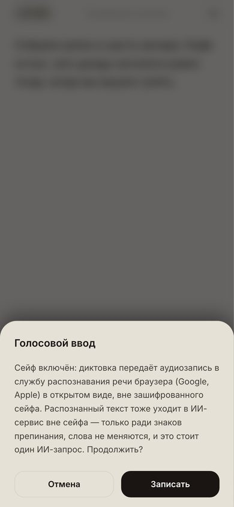
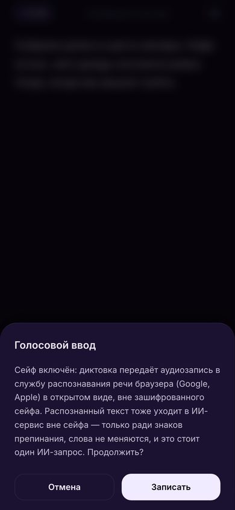
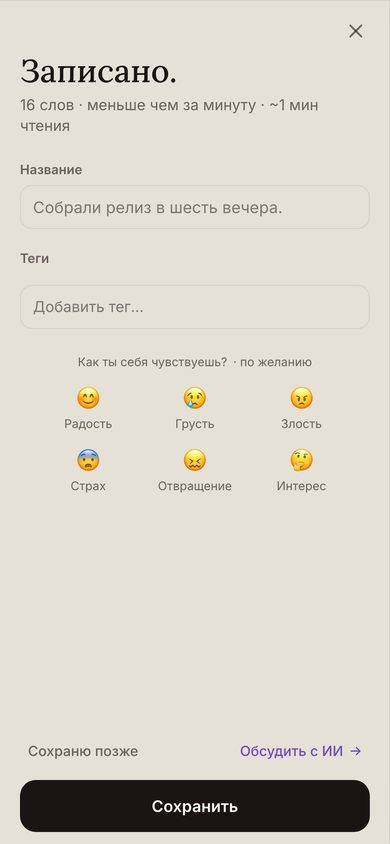
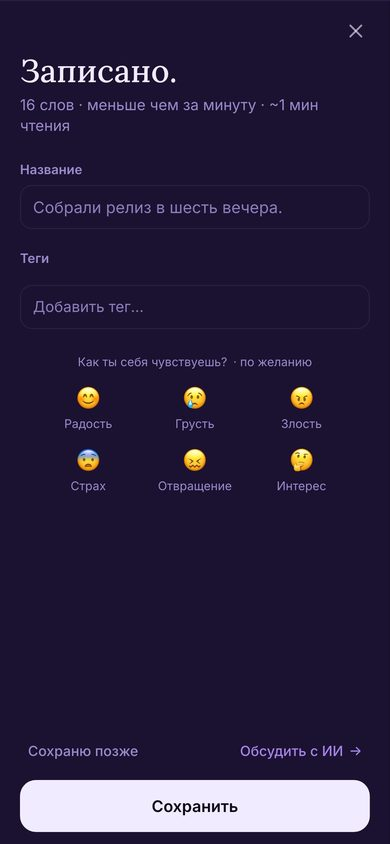
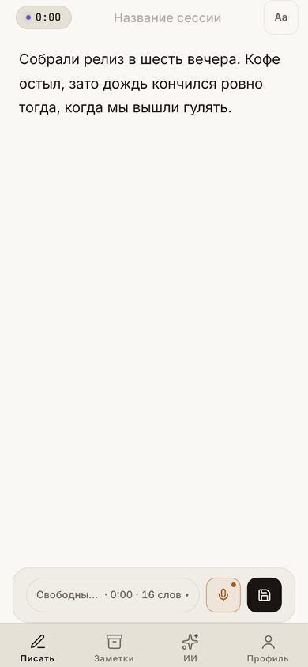
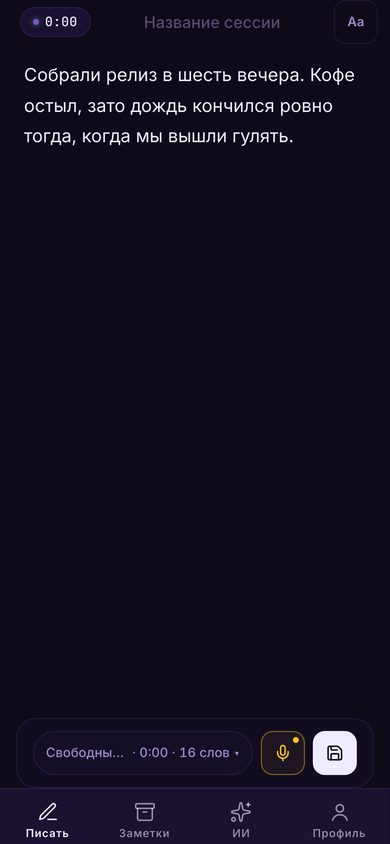

Письмо на телефоне
Экран Писать открывается первым. В нём текст заметки, нижняя панель с кнопками и чипом режима — всё остальное вызывается из этой панели.
На этой странице
Как начать
Наберите первую букву — сессия начнётся сама: пойдёт время, включится автосохранение черновика. Отдельной кнопки «начать» нет. Пока текст не начат, нижняя панель показывает только вход в настройку сессии и микрофон.


Чип режима и его лист
В нижней панели слева — чип Режим сессии: на нём видно, какой режим сейчас выбран (например, Свободный поток или Поток сознания) и сколько идёт сессия. Нажмите чип — снизу выедет лист, где можно:
- поставить сессию на паузу и снять с неё;
- начать новую заметку;
- позвать ИИ-помощник;
- выбрать режим письма и цель — по словам или по времени.
Чип держит своё место и при паузе: подпись меняется на На паузе, а панель не прыгает.


Микрофон и диктовка
Кнопка микрофона ставит диктовку: пока говорите, в тексте видно распознаваемые слова и волну голоса. Кнопка Остановить диктовку вставляет сказанное в заметку, Отменить выбрасывает запись, и в тексте ничего не появляется.
Речь распознаёт сам браузер, поэтому нужен интернет и разрешение на микрофон — браузер спросит его при первом включении. Уходя с экрана письма посреди диктовки, микрофон выключите сами или это сделает приложение: надиктованное в другую заметку не попадёт.


Знаки после «Остановить»
Голосом точки не ставят, поэтому после остановки ИИ расставляет в надиктованном знаки препинания, заглавные буквы и абзацы. Кнопка микрофона помечена значком ИИ, и перед первой такой обработкой приложение предупреждает: уйдёт один запрос дневного лимита.
Слова при этом не меняются — только знаки между ними. Если ИИ всё-таки тронет слово, результат отбрасывается и текст остаётся как есть. Без входа в аккаунт и без согласия на ИИ расстановки нет: текст вставляется точно как сказан, и запрос никуда не идёт.
«Сохранить»
Кнопка Сохранить в нижней панели заканчивает сессию и превращает её в заметку. Пока вы не нажали её, текст живёт как черновик: он переживёт закрытие вкладки и случайную перезагрузку, и при следующем заходе приложение предложит его вернуть.
Написание сохраняется каждые 30 секунд автоматически — то есть даже без нажатия Сохранить текст не теряется.
Окно «Записано.»
После «Сохранить» в панели письма появляется окно Записано.: вверху — сколько слов и времени заняла сессия и сколько примерно минут читается, ниже — название (можно поправить), теги и настроение по желанию, внизу — «Сохраню позже», «Обсудить с ИИ» и «Сохранить». Пока вы не нажали «Сохранить», заметка не записана: «Сохраню позже» оставляет её черновиком.


Горячие клавиши и пауза
На телефоне нет клавиатурных сокращений, которые есть на компьютере, — вместо них панель и листы. Сессия встаёт на паузу, когда вы сворачиваете браузер или уходите в другую вкладку; время паузы считается отдельно и в окне завершения показывается как Отвлечения.


Про цели, режимы и статистику письма подробнее — в «взрослом» разделе «Как писать».